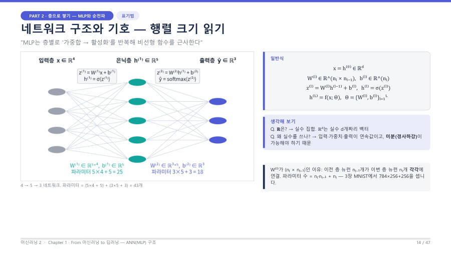

← 보드MLP 구조와 파라미터 수 · 3/7
가중치 행렬의 크기 읽기 — W는 (이번 층 × 앞 층)
한 층의 계산은 z = Wx + b예요. 여기서 W의 크기가 시험에 나와요. 외울 문장은 이거 하나예요.
이유는 이래요. 앞 층 뉴런 nₗ₋₁개가 이번 층 뉴런 nₗ개 각각에 모두 연결돼요.
이런 "모두 연결"을 완전 연결(fully connected) 또는 Dense 층이라고 불러요. 이번 층 뉴런 하나가 앞 층 숫자 nₗ₋₁개를 곱하는 가중치 한 줄(행)을 가져서, 행이 nₗ개, 열이 nₗ₋₁개인 표가 돼요.

| 층 | W의 크기 | b의 크기 | 파라미터 |
|---|---|---|---|
| 입력(4) → 은닉(5) | 5 × 4 | 5 | 5×4 + 5 = 25 |
| 은닉(5) → 출력(3) | 3 × 5 | 3 | 3×5 + 3 = 18 |
| 합계 | 43 | ||
외우기 팁
크기를 헷갈리면 곱셈이 되는지 확인하세요. W(5×4)에 x(4개)를 곱하면 "안쪽 숫자 4와 4가 같아서" 곱셈이 되고, 결과는 "바깥 숫자 5"개가 나와요. 그래서 W는 (이번 층) × (앞 층)이에요.
시험엔 이렇게 써요
l번째 층의 가중치 행렬 W⁽ˡ⁾는 (nₗ × nₗ₋₁) 크기이다. 앞 층의 nₗ₋₁개 뉴런이 이번 층의 nₗ개 뉴런 각각에 연결되기 때문이며, 편향 벡터 b⁽ˡ⁾는 뉴런마다 하나씩이라 크기가 nₗ이다.
잠깐 확인 — 앞 층 784개, 이번 층 256개일 때 W의 크기는?
(256, 784)예요. 이번 층 수가 앞(행)에, 앞 층 수가 뒤(열)에 와요.
다음 카드 → 파라미터 수 세기 ★★ — 공식과 예제
자료: 2주차·6주차 · 머신러닝2_chapter1_student_ver.pdf(PART 2) · 머신러닝2_chapter3_redesign.pdf(p.11) · 머신02.txt · 머신러닝06.txt · 머신러닝07.txt